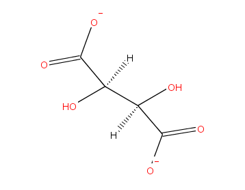

CML demo
2007-06-22
I mentioned before that at the ETD 2007 conference I met Prof Peter Murray-Rust. We're going to collaborate on adding support for CML – the Chemical Markup Language to ICE, so that people can write research publications that include 'live' data.
Here's a quick demo of the possibilities.
I went to the amazing Crystaleye service.
The aim of the CrystalEye project is to aggregate crystallography from web resources, and to provide methods to easily browse, search, and to keep up to date with the latest published information.
Crystaleye automatically finds descriptions of crystals in web-accessible literature, turns them into CML and builds pages like Acta Crystallographica Section B, 2007, issue 03-00.
From that page I grabbed this two dimensional image of (C~6~H~15~N~4~O~2~)~2~(C~4~H~4~O~6~^-2^),

There's a Java applet on the page that lets you play with the crystal in 3d. Here's a screenshot. of the 3d rendering.

There's lots more work to be done, but I thought I'd show how easy it is to make an ICE document that shows the 2d view for print, with the 3d view for the web, via the applet. Be warned, this may not work for you. The applet refuses to load in Firefox 2 for me, but it does work in Safari on Max OS X. If you follow the 'view this page in PDF' link above you'll see just the picture.
What's happening here?
My initial hack is really simple. I grab the image and paste it into ICE like any other image, but then I link it to the CML source. I wrote a tiny fragment of Python in my ICE site to go through every page, and if it finds a link to to a CML file containing an image, it adds code to load the CML into the Jmol applet. This is a kind of integration-by-convention, AKA microformat.
The main bit of programming only took a few minutes, but sorting out where to put the CML files and the Jmol applet, and integrating the changes into this blog took ages. I ended up putting the files here on my web site which meant putting a big chunk of stuff into subversion, something that should have been done ages ago, but the version of svn that runs on my other server refuses to do large commits over HTTPS 'cos of some SSL bug and I can't figure out how to update it which meant switching the repository to use plain HTTP, and so on. It wasn't made easier by me mucking around with the Airport Extreme router and our ADSL modem at the same time, halting internet access at home for a couple of hours.
To make this integration a bit more usable and robust we want to:
-
Work out a workflow that lets you keep CML files in ICE and easily drop images in to your documents, letting ICE render using the applet when it makes HTML.
-
Integrate forthcoming work from Peter & team that will provide high quality vector graphics instead of the PNG files I'm using now.
-
Investigate embedding CML in an image format such as EPS that word processors understand.
-
Generalize this approach for other e-scholarship applications. We're working with the Alive team at USQ on this.
-
Talk to the DART & ARCHER teams.